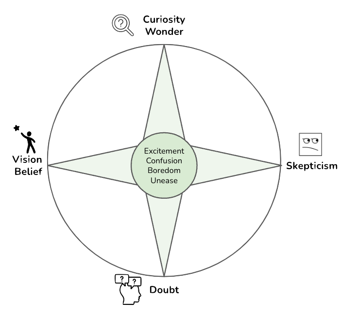
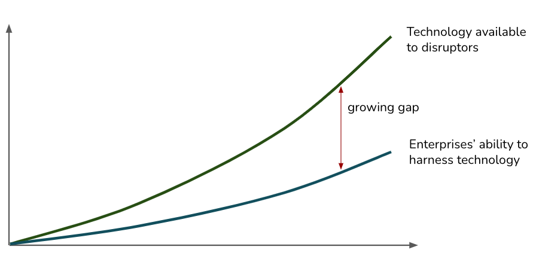

Balancing Curiosity, Doubt, Vision, and Skepticism in IT Architecture
IN THIS SECTION, YOU WILL: Understand that balancing curiosity, doubt, vision, and skepticism is essential for driving sustainable innovation and change in organizations.
KEY POINTS:
- Curiosity and wonder spark exploration, leading to technological breakthroughs. However, without caution, it can result in premature adoption of immature solutions.
- Doubt forces a critical evaluation of progress, ensuring that innovative ideas are grounded in practical and validated approaches. Over-reliance on doubt can stifle risk-taking and hinder breakthrough innovation.
- Vision and belief provide a long-term perspective, guiding efforts toward significant, transformative goals. Yet unchecked vision can lead to confirmation bias or misdirected resources.
- Skepticism helps prevent overcommitment to unproven ideas, ensuring teams remain grounded. However, excessive skepticism can result in missed opportunities and discourage creative risk-taking.
- Architects must constantly reflect on how well they balance these forces. In doing so, they can ensure that their efforts are driven by a healthy combination of exploration, critical validation, strategic guidance, and cautious realism—all crucial to achieving lasting success in any organizational change.
In fast-changing technology environments, architects help organizations innovate in ways that are both ambitious and sustainable. Their role is not only to introduce ideas, but also to evaluate, challenge, and guide them.
This chapter gives a more behavioral view of the architect’s role in the manuscript. Grounded Architecture asks architects to stay open to change without becoming naive, and to stay critical without becoming cynical. The balance between curiosity, doubt, vision, and skepticism is one way to describe that discipline.
To support sustainable innovation and meaningful organizational change, architects need to understand the forces that drive teams. I think of these forces as a compass with four essential directions:

Figure 1: The compass for driving sustainable innovation and change in organizations.Each direction represents a different but complementary motivator:
- Curiosity encourages exploration and the hunt for new possibilities.
- Doubt prompts us to reflect critically and reevaluate our assumptions.
- Vision provides clarity by linking our efforts to long-term strategic goals.
- Skepticism ensures we challenge feasibility and practicality, paving the way for sound execution.
These four forces, explorative, reflective, strategic, and critical, pull in different directions. Sustainable innovation does not come from choosing one of them. It comes from balancing all four.
Architects are well placed to weave these motivators into innovation and transformation work. In practice, that means making sure:
- Curiosity sparks structured experimentation rather than a chaotic free-for-all.
- Doubt and skepticism sharpen our thinking without putting a damper on our creativity.
- Vision aligns innovation with the organization’s broader goals and impact.
By helping teams find this balance, architects enable innovation that is bold but grounded, strategic but adaptable.
The following sections look at each force in turn and how architects can use it without letting it dominate.
Curiosity and Wonder: The Spark of Innovation
Few forces matter more to innovation than curiosity and wonder. Curiosity is the impulse to explore, understand, and ask, “What if?” It is one of the strongest drivers of technological progress.
In strong engineering cultures, curiosity is not tolerated as a side hobby; it is actively cultivated. Organizations that create autonomy, room for experimentation, and time to explore are more likely to produce meaningful innovation.
The Architect’s Role in Enabling Productive Curiosity
Architects can lose this instinct over time, especially when the job becomes dominated by governance, reviews, and risk management. The best architects resist that drift. They remain curious catalysts who explore emerging technologies deliberately and with purpose.
Architects are therefore responsible for productive curiosity, not trend-chasing.
According to insights from ThoughtWorks, there’s a growing gap between the pace of technological change and how quickly organizations can adopt these changes. When organizations don’t keep up, they’re not necessarily lacking in innovation; instead, they struggle to absorb and apply new ideas in a sustainable fashion.

Figure 2: Technology advances exponentially, but organizations struggle to adopt at the same pace. Curiosity helps bridge this gap. Source: thoughtworks.comThe Double-Edged Nature of Curiosity
Curiosity becomes dangerous when it loses discipline. Teams that chase every new technology without reflection often create naive solutions, unnecessary complexity, and avoidable technical debt.
That is why curiosity needs counterweights: doubt, skepticism, and vision.
Real-World Examples: Curiosity in Action (and It Risks)
Here are some real-world examples of how curiosity has spurred meaningful innovation, along with the pitfalls that sometimes come with it:
Microservices Architecture
- Innovation driver: Curiosity about modularity and scalability gave rise to microservices, offering flexible deployments and cloud-native ecosystems.
- Sustainability risk: Teams that rushed into microservices without the right tools or operational readiness faced increased complexity and performance issues.
Serverless Computing
- Innovation driver: Developers eager to reduce infrastructure burdens pushed the adoption of serverless architectures.
- Sustainability risk: Those who didn’t consider factors like cold start times or vendor lock-in often ran into performance bottlenecks later.
Agile Methodology
- Innovation driver: The desire for quicker, more adaptable workflows fueled the rise of Agile.
- Sustainability risk: Misusing “Agile in name only” created chaotic environments without actually improving outcomes.
Blockchain in Software Development
- Innovation driver: The attraction of decentralization and security ignited experimentation in numerous non-financial areas.
- Sustainability risk: Occasionally, blockchain was applied where more straightforward technologies would have sufficed, leading to unnecessary complexity.
Final Thought: Channeling Curiosity with Purpose
Curiosity keeps organizations relevant. But curiosity alone is not enough. It must be paired with evaluation, critical thinking, and strategic alignment.
Architects should encourage teams to explore boldly while keeping exploration purposeful, sustainable, and connected to real needs.
Doubt: The Key to Certainty and Strength in Innovation
Doubt is one of the most underrated forces in innovation. It is the mechanism that pushes us to validate assumptions, refine ideas, and strengthen designs before they fail under pressure.
Doubt vs. Skepticism: What’s the Difference?
Doubt and skepticism are not the same. Skepticism questions the underlying premise. Doubt assumes the direction may be right, but asks whether the current approach is sound enough.
Doubt aims to ground our ideas more firmly, not dismiss them outright.
In fields like architecture and software engineering, doubt manifests through practices that promote quality—think testing, peer reviews, validation frameworks, and architectural scrutiny.
Building a Culture of Constructive Doubt
Architects should build cultures where doubt is treated as an asset rather than a weakness. Used well, doubt leads to stronger systems, clearer thinking, and better decisions.
But doubt has a failure mode: analysis paralysis. If every idea must survive endless scrutiny before action, innovation slows to a halt. The goal is disciplined validation, not permanent hesitation.
Real-Life Examples of Doubt in Architecture
Unit Testing & Test-Driven Development (TDD)
- How doubt helps: Writing tests before coding ensures we validate behavior and minimize future failures—grounding our work in real, testable outcomes.
- When doubt goes too far: If tests become too rigid, they can discourage change and make it harder to refactor, locking teams into overly cautious patterns.
Code Reviews
- How doubt helps: Code reviews bring in fresh perspectives, catch flaws, and boost maintainability. They promote a sense of shared ownership.
- When doubt goes too far: If reviews become excessively critical or perfectionistic, they can slow down progress and dampen team morale.
CI/CD Pipelines
- How doubt helps: Automated validation checks that our software behaves correctly at every stage of integration and deployment.
- When doubt goes too far: Teams might hesitate to make big changes or embrace architectural innovations if they fear triggering failure flags in closely monitored pipelines.
Architectural Peer Reviews
- How doubt helps: Peer reviews help identify blind spots in our system design and ensure we align with non-functional requirements while minimizing long-term risks.
- When doubt goes too far: Reviews can sometimes create a risk-averse culture that discourages exploring new patterns or technologies.
Security Testing (Penetration Testing & Threat Modeling)
- How doubt helps: Security testing operates on the assumption that vulnerabilities exist, driving us to build stronger defenses and resilience.
- When doubt goes too far: Being overly cautious can hinder innovation and slow down feature delivery, resulting in overly restrictive designs.
A Final Thought: Doubt as a Design Principle
Used constructively, doubt turns innovation into resilience. It ensures that enthusiasm is matched by rigor. But it only works when balanced with curiosity, vision, and a willingness to act.
Vision and Belief: Sustaining Transformation Through Purpose
Belief can sound vague, but in practice it is essential to transformation. Significant change rarely starts with certainty. It starts with a strong vision of what could be better.
Vision and belief are long-term motivators. They provide the direction and persistence required for initiatives whose value may take time to appear.
Vision Is Direction—Not Destination
Curiosity encourages exploration; vision gives exploration direction. Together they create a productive pattern: explore widely, but stay focused.
Vision without critique is risky. It can turn into confirmation bias, where teams defend an appealing story rather than testing whether it is true. That is why vision must be balanced by doubt, skepticism, and experimentation.
Real-World Examples of Vision in Action
Here are some examples where vision and belief sparked technological transformation, but critical evaluation ensured those visions became reality:
The Internet
- Visionary spark: Think about visionaries like Vannevar Bush and J.C.R. Licklider, who dreamed of a global interconnected network—what Licklider dubbed an “Intergalactic Computer Network”.
- Balancing belief: This imaginative vision only became a reality through decades of tackling challenges around protocols, bandwidth, and reliability—all grounded in rigorous engineering and continuous improvement.
Agile Software Development
- Visionary spark: The Agile Manifesto captured a belief that software development could be quicker, more adaptable, and more centered on human needs.
- Balancing belief: Agile success hinges on teams continuously testing and refining their approaches. When belief outpaces reality—like in cases of “Agile in name only”—results can fall short.
The DevOps Movement
- Visionary spark: DevOps emerged from the belief that breaking down silos can enhance collaboration, speed, and quality in software delivery.
- Balancing belief: DevOps thrives when teams take a pragmatic approach—adapting tools, processes, and culture thoughtfully, rather than following a strict dogma.
Artificial Intelligence (AI) and Machine Learning (ML)
- Visionary spark: From Alan Turing’s pioneering ideas to today’s advancements in NLP, computer vision, and generative models, belief in AI’s potential is pushing the envelope of innovation.
- Balancing belief: Responsible AI development demands rigorous testing, ethical considerations, and a grounded understanding of limitations—balancing hype with humility.
Vision Without Balance Is Risky
Vision and belief are crucial, but they are not enough on their own. Without curiosity, teams miss alternatives. Without doubt, they miss flaws. Without skepticism, they mistake aspiration for evidence.
The best architects can inspire belief while remaining open to challenge and adaptation.
Final Thought: The Courage to Believe, the Discipline to Validate
In architectural leadership, vision gives innovation meaning. But vision must be tested, and belief must be earned through execution.
Skepticism: The Critical Lens That Fuels Innovation
Skepticism is often confused with cynicism, but they are not the same. In architecture, skepticism is a disciplined reality check that helps teams avoid unexamined assumptions and costly illusions.
If doubt asks whether an approach is sound, skepticism asks whether the underlying claim deserves belief at all.
Skepticism ≠ Pessimism
Skepticism is not anti-innovation. It is a demand that new ideas be practical, evidence-based, and grounded in reality. Fred Brooks’s No Silver Bullet is a classic example of this mindset.
Skepticism is not pessimism—it is realism tempered with experience.
How Skepticism Shapes IT Architecture
In the realm of IT architecture, skepticism plays a pivotal role in:
- Evaluating new trends critically
- Identifying hidden costs or complexities
- Preventing over-engineering or the premature adoption of unproven technologies
That said, unchecked skepticism can also create problems. It can lead to missed opportunities, stifle promising innovations, and breed a culture of stagnation. When skepticism becomes a reflex instead of a reasoned approach, it slides into unproductive negativity.
What architects need is practical skepticism: skepticism backed by knowledge, experience, and perspective.
Real-World Examples of Constructive Skepticism
Here are some examples where skepticism had a positive impact:
Monolith vs. Microservices
- Skeptical insight: Microservices seem great for flexibility and scalability, but early adopters raised concerns about distributed complexity and communication overhead.
- Impact: This skepticism led to hybrid models—like modular monoliths—that preserve simplicity while offering scalability. The result? Tailored solutions that truly fit the problem.
Blockchain Everywhere
- Skeptical insight: Blockchain was touted as a magic solution for everything from supply chains to voting systems. Critics questioned whether its complexity was genuinely necessary.
- Impact: This critical viewpoint prevented many organizations from misusing blockchain. Instead, they focused on traditional databases when decentralization wasn’t vital.
Artificial Intelligence (AI) Hype
- Skeptical insight: Skeptics pointed out the exaggerations surrounding general AI and autonomous vehicles, particularly regarding safety and data bias.
- Impact: This grounded view fostered ethical AI development, promoting realistic use cases (think narrow AI) and better safeguards for deployment.
Agile Methodology Skepticism
- Skeptical insight: Agile doesn’t work for every team. Architects highlighted concerns where Agile was applied without considering team maturity, product type, or architectural needs.
- Impact: This pushback led to innovative hybrid methodologies, blending Agile practices with upfront planning, particularly for larger systems.
Serverless Computing
- Skeptical insight: While serverless platforms promise speed and scalability, skeptics pointed out issues like cold starts and vendor lock-in.
- Impact: Many teams adopted selective serverless strategies, using them for event-driven workloads while keeping traditional infrastructure for core systems.
Skepticism as a Leadership Skill
Skepticism is one of the most intellectually demanding architectural skills because it relies heavily on judgment, pattern recognition, and wide exposure.
There are few templates for it. It develops through experience, expertise, and a willingness to question fashionable assumptions.
The best architectural leaders are not contrarians by reflex. They are constructive skeptics who know when to question hype and when to support proven approaches.
Final Thought: Finding Balance
Skepticism is a safeguard, not a roadblock. Balanced with openness, it helps teams produce solutions that are not just innovative, but effective.
Integrating the Compass: Finding Balance in Sustainable Architecture
Think of curiosity, doubt, vision, and skepticism as points on a compass. They are not opposing forces so much as complementary ones. Balanced together, they create resilient and forward-looking architecture.
In high-performing teams, these motivators work hand in hand:
- Curiosity ignites our desire to explore and learn new things.
- Doubt encourages us to test and validate our ideas.
- Vision keeps us focused on a clear direction and purpose.
- Skepticism makes sure we stay grounded in reality.
Lean too far toward any one of them and problems appear. Curiosity without discipline becomes novelty chasing. Skepticism without openness becomes stagnation. The point of the compass is to support decisions that are bold but careful, strategic but adaptable, and ambitious but realistic.
Cultivating Balance Through Questions
A practical way to integrate these forces is to ask better questions:
- Curiosity:
- Are we actively exploring new technologies and approaches, or are we just sticking to what we already know?
- Are we encouraging room for experimentation and learning throughout the organization?
- Vision:
- Do we have a clear architectural direction guiding our efforts?
- Are we just reacting to trends without a cohesive strategy in place?
- Doubt:
- Are we using the right methods—like testing and validation—to reduce uncertainty and boost our confidence in our solutions?
- Are we willing to refine our ideas when necessary?
- Skepticism:
- Are we critically examining our own assumptions and biases?
- Are we being skeptical of our own preferred solutions, or just questioning those from others?
Final Thought: Leading with Balance
Architects play a critical role in orchestrating this balance. When they blend curiosity, doubt, vision, and skepticism well, they create environments where:
- New ideas are explored boldly but assessed wisely,
- Strategy informs action without stifling innovation,
- Critical thinking enhances outcomes, rather than slowing them down.
The goal is not simply to choose a direction once, but to build a compass that keeps teams moving with purpose, clarity, and confidence.
For the larger argument of the book, this balance is what keeps architecture both grounded and forward-looking. It helps architects explore new possibilities while still protecting execution quality, organizational trust, and strategic coherence.
To Probe Further
- The Four Points of the Research Compass, by Željko Obrenović, 2013
Questions to Consider
Use the following questions to reflect on how well you balance openness, doubt, vision, and skepticism in practice.
- How does curiosity drive innovation in your organization, and how do you prevent it from leading to unsustainable or risky decisions?
- In what ways can doubt contribute to the quality and robustness of your work, and how do you ensure that it doesn’t stifle innovation?
- How do you balance long-term vision and belief with the need for critical evaluation and validation in your decision-making?
- How do you cultivate constructive skepticism without allowing it to turn into cynicism that hampers creativity?
- When exploring new technologies, how do you ensure you follow industry trends and align them with a clear strategic vision?
- How can fostering a culture of curiosity, doubt, vision, and skepticism lead to more resilient and impactful solutions in your organization?
- What strategies can you use to balance risk-taking with rigorous validation in the innovation process?
- How does your organization support contributions driven by the four motivators: curiosity, doubt, vision, and skepticism?
- In what ways can skepticism be used as a tool for improvement without dismissing promising new ideas too early?
- How do you foster environments where curiosity and exploration are encouraged but tempered with thoughtful, critical evaluation?
On Being an Architect |
|||
| ← | → | ||